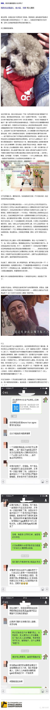
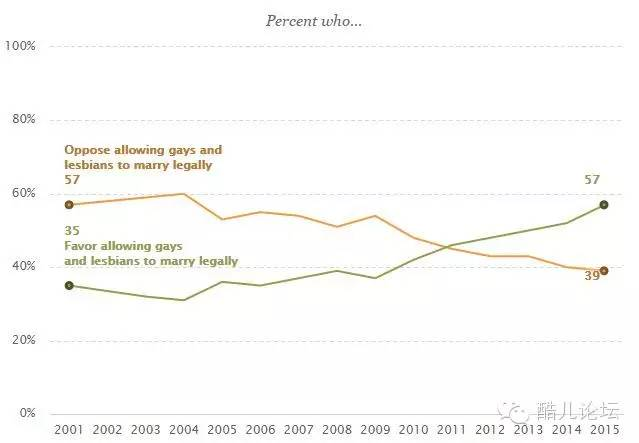

怎么看待中大女生毕业典礼出柜？
谈谈“非异性恋的坚定支持者”
今天某个小伙伴在群里转了一个知乎的问题，里面赞数最高的回答实在让人觉得逻辑感人，还打着“非异性恋的坚定支持者”这样漂亮的理中客旗号。先看看原文：

待老衲来给大家分析分析这里面的感人逻辑
本回答谈谈那些“坚定的非异性恋支持者”们和他们的“非异性恋”朋友；可能大篇幅偏题。
“同性恋”这个词在19世纪末被提出来后，同性恋这个群体才真正从原本的无数“鸡奸者”、“磨镜”的个体中诞生。这种建构带来了两方面的结果，一种是我们所默认的:它被视作反常、偏离而得到研究、被压抑和治疗、被污名化和控制；另一种是我们正在讨论的，相应的对这种“反常”和“控制”的反抗，即身份认同政治，包括那些“为同性恋正名”的运动。还有一种结果是彻底反对这种建构，拒绝被贴上“同性恋”、“女性”的标签，即“酷儿理论”。
“我们和异性恋没有不同”这句话更多的是口号和愿景。当贴上了“同性恋”的标签的时候，就意味着我们把自己定位为一个被社会权力关系建构的群体，而这种建构的确是对群体造成了影响的：不稳定关系、由于社会压力和边缘性造成的心理问题、以及相伴随的毒品滥用等问题。忽视这些不同，一味地去追求语境上的“平等”，其实也是对群体的忽视。
拒绝使用这种话语也是一种对策，所以我的理解下，“非异性恋”就是想通过弱化这样的二元对立，来让每一个受到这个词背后的污名化的影响的人得到释放。但是，拒绝使用这样的话语是好的不代表否认差异和建构是对的。这是我提出批评的基础。
“非异性恋”的支持者认为同性恋的污名不是来自社会建构而是同志本身，对同性恋的包容是“社会进步”而非同志努力的结果。这是我最无法接受的一点，也说明这种“支持”是有条件、对特定人群的“支持”。
“非异性恋”支持者的逻辑是：我们都一样，因此没有必要表现独特，表现高调是在展示差异，差异会遭致反感，所以使同志更加受污名化。高调者应该受到谴责。
那么问题来了，是同志高调造成了这种污名化，还是社会对差异的不容忍不包容造成了这种污名化？同志是否应该去高调展示自己？“一样”是被平等对待的基础吗？
这些问题的核心在于：同性恋和异性恋一样吗？
从非异性恋的支持者们来看，抛开掉二元对立的性取向划分，同性恋和异性恋从本质上当然一样。所以同志才会要求普适的人权和平等。
但是人权和平等是基于我们一样才给与的吗？如果黑人一定要强调自己的种族差异，我们就要拒绝给他平等吗？一个人不伤害他人的差异（不管是自然还是选择的）是剥夺他权利和平等对待的理由吗？在我看来，包容的意思就是接纳和正视“不同”。如果是希望就某个群体完全和自己一样才接纳它，反而是一种不包容。
正如前文所说，同性恋之所以被压抑，就是因为它被社会建构为“反常”、“偏离”的代表。不管是反抗这种建构和标签，还是为这种反常正名也好，都没有人否认这个群体与其他群体所存在的差异。我们在呼吁包容，是包容有差异的我们。
穿着暴露、审美恶心的同志不配受到尊重和包容吗？他们是在哪里违反了非异性恋者们的“不一样”的法则呢？不包容“穿着暴露”、“娘炮”、“独特性癖好”的更少数群体（还不一定都是同性恋），和社会不包容“性取向”不同的同志的差别在哪里？认为这些群体给同志抹黑，实际上还暴露了这些支持者对异性恋内部的小众群体的漠视和污名化。
现在我们换回“非异性恋”支持者的思维。我们和异性恋本质一样。
但是我们走进现实，我们发现社会对待我们的方式是不一样的，人们认为我们和异性恋是不一样的，父母要我们和异性恋保持一模一样的行为方式。“非异性恋”支持者们可以把同性恋看作是一件平常的事，这非常棒，但是这也无法否认同志正在被大多数人区别对待、压抑的事实。
那么，“非异性恋”的支持者们，如果我们不发声，我们应该如何让别人看到和理解我们的“一样”呢？谁又是“正统”的同志去主导发声，不管那些更少数的“不一样”的群体的声音呢？
切换到“不一样又怎样”的思维。我们的确认为同性恋本应该和异性恋一样淡定，应该不被根据性取向来对待。但是在现在的情况下，我们承受着污名，又在自信的生活，为什么不能骄傲呢？我们倒真是希望，真的平权的时候我们也不用骄傲了。我们才没有把自己定位成“弱势群体”，而是在说，“就算有你们的污名，我们也可以过得很好”的前女友思维好嘛！
所以，不管是“一样”的逻辑，还是“不一样”的逻辑，都要求我们去发声，因为认识是了解的第一步。至于这种了解后的结果是什么，完全是根据个人的认知水平决定。如果发声会导致反感，So what？我还能阻止别人不反感不成？这个社会遭致反感的事太多了，但是反感和歧视完全不同，反感没有造成你基本权利的损害，你也没有理由因为反感就去干涉别人的行为：反感同志的人没有理由去干涉同志，反感同志在公众场合下的行为的人也没有理由去干涉他们。我能说我反感香菜吗？堵气地说一句“就是要你们反感”，就是要让那些觉得全世界都应该按照他们舒服的方式来运转的人不舒服一下：）
“因为你高调所以才反感”更是一种可笑的掩饰。在这里“非异性恋”支持者们又把同性恋与异性恋之间的地位不等给否认掉了。异性恋可以去跟校长获得支持吗？你们当然可以，但你们自己也觉得违和感十足，为什么？你们见过胜利者去要求获得支持的吗？作为多数群体你们本来已经获得了同性恋者得不到的权利，也没有经历同性恋者曾经和正在经历的对待。
“同志需要的就是平等的对待”，拜托平等是“一模一样”这种思维是小学生才会有的好吗？举一个例子，加州的SAC5修正案允许高校等在录取时考虑性别、族裔的因素，这样就可以允许由于历史原因在教育资源上占据了不利位置的少数族裔、女性等在录取时有更多机会，这被称作为“扶持行动”（Affirmative Action），难道因为男女平等、种族平等就说这种行为是不平等的吗？相反这恰恰是一种平等的对待。
上个月是同志骄傲月，来源肯定很多人都知道：石墙暴动。这是美国同志运动兴盛的起点。经过各种反复和打击，从Mattachine Society到HRC，从米尔克到弗兰克（笑），美国同志和异性恋盟友们用各种方式在为权益奋斗，特别是在近10年，如果看看数据就会发现是一个天翻地覆的过程。
这是单纯的因为“社会文明程度”在短时间内上升了吗？社会文明程度是谁？我觉得还是因为这10多年在同志越来越主动的寻求媒体cover、发声机会有关，特别是在08年起Proposition 8的全国大范围的讨论，可以看到节点也大致是在这个位置。

我很庆幸那位高素质的“非异性恋”者能够在高中平稳出柜（我在初中跟同学出柜了，不过从来没有人跟我道歉有偏见什么的233333），但是这并不是只有你个人“普通”、“不张扬”的原因，这是千万个不普通、很夸张、很“变态”的人用自己去拥抱污名化换来的结果。石墙旅馆门口那些向警察扔鞋的跨性别、变装皇后们，他们才是真正值得去尊重和包容的人，但是他们现在仍然在承担着来自社会，包括我们少数群体内部的污名与歧视。
我很庆幸有这样的女生愿意站出来（而且我也觉得去要求支持没什么不对的，看看哥大校长淡定的转身放纸条就明白，校长当然有权利和自由在这个时候做出选择；如果把支持的对象换成“女性”你们还会说“恶心”到别人吗？把标签换成“那届校长支持过女权的毕业典礼”会让你不开心吗？），感谢有他们，我们可以不仅仅坐等着“社会文明程度”的上升，我们可以让后人能够有更包容的环境。
(2015年5月，哥伦比亚大学毕业典礼上，强奸受害者Emma Sulkowicz扛着床垫抗议学校的不作为，校长当时选择了背过身忽略她们。此前她已经一直扛着床垫到学校里每个角落）
“至少，今天我们在这里讨论、争辩了，不就是已经迈出了一步吗”
最后，回复“八”可以观看一部感人的纪录片《审判8号提案》，权利绝不是可以坐等来的。
点击“阅读原文”可查看知乎答案页面